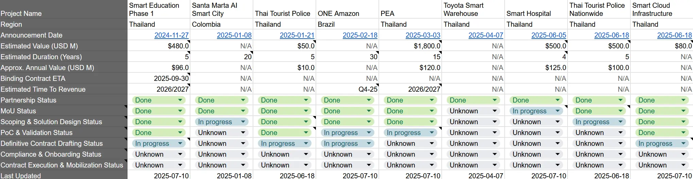

Gorilla Technology July 10th 2025 - Webinar Notes
I (Mika7) put this webpage together quickly, so apologies if it looks a bit minimal.
Disclaimer: Not financial advice. This is 100% personal
opinion and notes about the webinar made by me as a simple shareholder
and follower of the stock. It may include mistakes, omissions, or
misunderstandings.
I‚Äôm also not a native English speaker, as you‚Äôll probably notice ü§£
A little note about what we know about the big projects already.
Big thanks to stocktwits user @permarust for this sheet
and hints ! I highly suggest everyone read his good posts about
Gorilla.
Link to his profile:
https://stocktwits.com/permarust
"(...) we're bidding on a smart hospital project in Thailand, which is a $500 million opportunity over four years as well." - Micro Cap Rodeo 2025-06-05
"(...) we're in the final stages of negotiating for our smart hospital project." - Interview 2025-06-23
Personal opinion on the webinar
Notes
- Pipeline : $5.6 billion / 87 active opportunities. (personal note: Thailand PEA project not included anymore as already in Proof-of-Concept phase (POC) as told last month)
- 1.3B of that is targeted for closure by mid-2026. These are multi-years contracts, the shortest is 3 years and the longest is 15 years.
- Several projects in Thailand and Taiwan are expected to reach signing before August 15th.
-
Large government contracts 5-10 years long like national security
infrastructure, education, critical law enforcement, are subject to
parliament and cabinet reviews. It is impossible and irresponsible to
predict the exact day for signing the contract.
But Gorilla is already deeply embedded as a strategic partner in that. - The company is always thinking about shareholders but also have customers needing national scale outcomes.
- Need to manage shareholder value + customer's trust + employee growth for long term resilience.
- Bringing high caliber people: see on LinkedIn for exemple all the awesome employee profiles they hired this year. Their profiles are exceptional.
- Smart education project: Final stage of commercial negotiations for the project in Thailand. About educating 6.5 million students! First phase of a multi-year, even multi-decade program.
- Smart hospitals in Thailand: advancing well. Finalizing detailed commercial models.
- PEA Smart Grid project: One of the largest national energy initiatives in Thailand/Asia today. Currently in Proof-of-Concept stage. It will advance in technical/commercial discussions. Further updates will come on a regular basis for each meaningful development.
- One Amazon: It has progressed massively in the past quarter. Official launch of the platform at New York Climate Week this September with their first tokenized environmental assets ready to roll out by COP 30 in November. Closing final funding grants with some of largest institutions/banks in the world and sovereign wealth funds. Lot of interest to back this. Building Proof-of-Concept of complete baseline mapping of hundreds of thousands of hectares + laying critical groundwork with state governments. Signing or signed up in few of the 9 countries where they are going to deploy the technology. Raj and R&D team are pushing to finalize the AI system for carbon and biodiversity verification. Racing to deploy satellite and ground sensor networks for initial POC ahead of COP 30. Project is moving fast. Expect revenues starting to come from Q4 2025
- HPE: advancing on large scale initiatives with HPE: secure data centers, AI appliances, fully integrated infrastructure platforms for governments and enterprise clients. The partnership gives world-class hardware and credibility that accelerate trust for projects about national infrastructure.
-
Solution Provider for Nvidia: Big advantage for video
analytics, deep learning models and large-scale orchestration. It was
needed to build Gorilla platform.
=> Asbolutly go see the rest of infos at the end of Q&A section here - Going to launch a hyperscaler to host a lot of the satellite data so the environmental data can sit in the USA.
- The ecosystem is backed by HPE infrastructure capabilities and Nvidia AI leadership.
- Formally launched the funds. First one is renamed in “Terostrata” (not sure about the spelling) => deployed 3.5B in assets + big cash position. The 2nd secured $1B term sheet. In the final stage of closing a term sheet for another $1B. They will be used for strategic deployments.
- Will use OPEX model for clients instead of CAPEX burden. Much more attractive.
- Now in advanced engagement with a key province in USA.
Offering: Raised $105M
Projects needs a bid bond (3-5% of project value) and a performance bond
(5-7% of project value). Ex: A project of 400M need between $20M and
$40M…
Type of projects Gorilla work on require showing substantial balance
sheet to be able to win them. You need to show the money if you want to
win.
Will be used to sign things in the pipeline that are signable in the
next couple of months.
Timeline accelerated for a couple of these contracts. Debt would take
too much time. The debt lined up would not complete in time to
realistically take on the project. So they raised equity to be able to
confidently sign the project. And also, to be able to execute if more
project come up into the pripeline.
As they said before, they had adequate funding for the project already
signed. Some projects became larger and shorter dated. Next 3 months
will vindicate this decision as we will see what they are doing and what
the funds will be used for.
Still committed to 1st :project level funding, secondly debt financing,
and thirdly if needed equity funding. Already lined up plenty of project
financing like funds from One Apazon and “Terostrata”.
Sold 1.45M treasury shares in the offering that they accumulated past
year and issued 1.05M new shares. The rest is prefunded warrants
(investor prepaid the full cash for warrants and will be able to
exercise for shares at his discretion if/when they need to sell them).
They are very happy how this worked out.
Investors asked to not disclose his name for now.
They are a very well respected fundamental portfolio investor, and it
is not a sovereign wealth fund.
More notes
- Debt: secured satisfactory term sheets for up to $200M. The timeline is not weeks like equity fund raise; it is months.
- Raising equity enables Gorilla to get into the projects and makes debt easier to get (pricing, service)
- $108M as total cash on balance sheet as of today. already used as bid bonds, performance bonds etc, to secure contracts in the pipeline in the near term. Over $80M of free cash to use for more bids and garantees for projects, and funding the performance on those contracts.
- Debt coming down to $16.5M (at 3% interest rate).
- Building in Taiwan still on the market. It would repaid the loan if sold.
- Q2 results: target for release is around mid-August (not a deadline guys Bruce told around this date)
- Priority for funding business is focused on raising debt or preferred equity (similar to debt). Engaging with bank(s) to arrange this. It will be announced if/when needed to secure contracts.
Q & A
- Offering: See above.
- Status of the $50M influx: Not yet received. Some invoices were delayed in terms of when they could be issued. On $25M that were invoiced, they received about $10M as of now. A bit disappointing, but tied to Governments… sometimes you need to be patient. (I worked at local Government level and it’s true, there is often delay but it’s “normal” and certainty to get paid is higher with Government IMO)
- Warrants: after the reverse split they were adjusted to 958K warrants, strike price is $115 a share. (some investors still doubt the infos is correct in Stocktwits about the 10:1 ratio, maybe confirmation should be asked to company about it)
- 20% Insider ownership: As a FPI Gorilla is not required to file form 4. (They could have filed 6K in my opinion)
- Sustain 40 to 45% gross margin on large projects? Yes because Gorilla owns much of the stack itself. Not at the mercy of endless chain of contractors. Building recurring revenues. As projects grow they find innovative ways to build up even more the margins.
- Margin expectation on new contracts ? Moving away from the old contracts style on the current negotiations (smart policing, national education, sovereign data…). Target 40-45% margin, and also providing CAPEX for customers. Project implementation also are about base od devices and software licences that support gross margins.
- 2026 guidance? will give credible guidance locked in by signed contracts and not fantasy. When project are closed in next quarters, especially One Amazon and Smart Education projects, significant revenues will begin to generate in Q4. They will issue multi year guidance at that point, either with Q4 numbers or early Q1 next year.
- Pipeline breakdown? $5.6B across 87 opportunities. $1.3B expected to be sign between now and 2nd quarter 2026. Spread across SEA, Latin America, Middle East and USA. Geographical balance.
- Pilots turned into customers? Yes, pilots or Proof-of-Concept for past 6-8 months have actually grown to full paid customers.
- US Government and public sector opportunities? Yes. Working on key province on the East Coast. Working on 5G lawful interception solutions for Government agencies in US. Lining up sizable US Infrastructure deals for later half of 2025. Takes but time but should show significant announcement over the next months.
- SEA Smart City Government contracts? currently engaged in 5 or 6 major contracts in SEA. They hope to sign them by mid-August.
- Thai acquisition? remain on track to close this quarter. Team is already operational and in place for leadership and execution quality positioning Gorilla for rapid scale development when it’s signed. This company have brought Gorilla in very significant deals in this region.
- Plan for M&A or joint ventures? Hands full for next few months with customers and M&A project in Thailand that comes with a full team of 70 people allowing to rapidly scale in SEA region. There will be then two big offices (Taiwan, and Thailand) both with R&D team and then with a team that can do the customer facing work. They have now access trough partners and private funds to more than 15-20B dollars of capital. They love good deal and undervalued assets that they could “Gorillize”(use, lol) and scale.
- legal action status and tentative of settlement? paased the case against Culper in order to pursue settlement negotiations. It’s almost over and the result is good for the company.
-
Nvidia partnership? Massive accelerator for Gorilla.
Not about prestige or name. Directly power the next phase of
infrastructure strategy. Customer demand shifted from generic computes
to high performance. Nvidia plaforms allows engineering exactly what
Gorilla needs.
Quote from Jay from the transcript:
“Compact edge devices that don't just see, they decide. Our proprietary IP from multi-person tracking to anomaly detection and complex object recognition now runs optimized on Nvidia's accelerated edge compute. Now this is not a simple model port. We are rearchitecting our entire AI pipeline for Nvidia's compute fabric. It means tighter CUDA kernel integration, tensor RT acceleration and full stack profiling all translating this does for us is actually strengthening our roadmap from Guerilla intelligent network director. All of you know about our SD-WAN solution to our new AI video analytics appliance. Everything is now designed for a groundup AI acceleration. Now for example there's one Amazon. We are not just drawing pretty satellite maps. We are training biomespecific language models on fused satellite and IoT ground data. Nvidia's GPUs are the only practical way to train and infer at scale. Now their developer ecosystem for example and their SDK stack like the Deep Stream and Triton give us a genuine force multiplier. The bottom line for us is that we are shifting Guerilla from a traditional compute to what is called you know what for me a rocket shaped AI native infrastructure. faster, smarter, everywhere from edge to cloud. This is how we will stay ahead of customer demand. Own the technical conversation and more importantly turn ideas into operational reality. So it is not fluff, it is serious guerilla progress.”